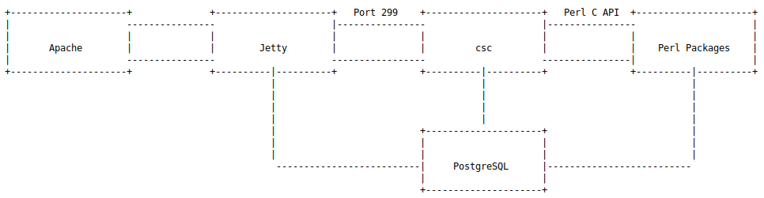

Tricks
搭建 FortiGate 调试环境
- 搭建 FortiGate 调试环境 (一) -- 关于如何获取 FortiGate shell 权限以及如何完成 License 授权验证。
- 搭建 FortiGate 调试环境 (二) -- 关于如何获取 FortiGate shell 权限，可信执行和新版本 License 授权分析。(二)
一些虚拟机获取 shell 的方法
通常研究一些网络设备，它们可以以虚拟机形式进行安装部署，在分析此类设备的时候，获取一个 root shell 会更加方便，但是大部分设备镜像中都设置了自定义的 cli 作为 jail，防止用户直接访问到 linux sh，提高设备安全性。
总结一些获取虚拟机设备 root shell 的方法：
- shell提权
某些设备没有内置自定义的 cli 程序，但是它们默认提供的 shell 权限较低，此时可以考虑通过某些历史漏洞进行提权，获取 root 权限，例如sudo堆溢出漏洞等，由于设备内核版本普遍不高，一般都可以成功提权。
- cli自带功能
为了更方便的维护设备，cli jail 中可能会添加一些特殊的命令，通过执行这些命令就能获取 linux sh，以 Citrix Netscaler 为例，其 cli 提供了 shell 命令，直接执行就可以获取 linux shell。
此外，例如 Checkpoint Gateway，可使用 set expert-password 设置专家模式密码，然后用 expert 命令进入专家模式，所谓专家模式就是 linux root shell。
所以，遇到一款新设备应该先查看其 cli 命令手册，看看是否存在能够直接获取 root shell 的命令。
- 利用历史漏洞获取shell
通过查看历史 CVE 或官方漏洞通告信息，可以发现一些 cli jail 存在命令注入/逃逸的问题，通过利用这些历史漏洞就能拿到 linux shell。（一般都是用反弹Shell的方式实现）
参考：D2T1 - Felix Wilhelm - Attacking Next Generation Firewalls - Breaking PAN-OS
- 解包修改文件系统
cli jail 背后对应着某个程序，通过解包文件系统，我们可以尝试修改这个 jail 程序或者直接在初始化脚本等位置添加代码，例如启动 telnet 或者反弹 shell 来实现逃逸。
需要注意的是系统可能对 file system 进行检测，如果发现文件被修改则拒绝启动，此时有两种解决方案。
[1] 修改 vmtools 相关文件，位于 /etc/vmware-tools 目录下的 vmtools 脚本文件属于第三方代码，厂商可能不会对它们进行检查。
[2] 修改文件系统检测程序，这种方式需要对程序进行逆向分析，尝试定位具体的检查逻辑。
- rbash逃逸思路
某些 cli jail 中可使用部分正常的 linux 命令，例如 find、more 等，方便用户操作，其中某些 linux 命令可用于逃逸，例如 find 的 exec 参数:
find / -exec /bin/bash \;
more 的 subshell，在交互式界面使用感叹号执行命令
root@localhost:/$ cat /bin/bash | more
...
...
!uname -a
less 的 MISCELLANEOUS COMMANDS，可以使用 !command 或 |Xcommand 等执行命令
还有一些参考方法见此文
- 虚拟机调试
比较复杂，建议看原文，blackhat DEVCORE 团队成员的议题中提到的一种方法。首先要大概了解 linux 系统的启动引导流程。
简单来说，Linux 启动时，主要做了以下操作:
1. BIOS 运行，执行 POST，硬件自检。
2. 硬件自检通过，BIOS 在磁盘查找引导记录，并加载到内存执行 (MBR)。
3. 引导记录启动引导加载器，常用的加载器包括 GRUB、GRUB2、LILO 等。
4. 引导加载器在磁盘寻找内核文件并装载到内存，将控制权转移到内核继续执行。
5. 内核通常是自解压文件，文件名带有 vmlinuz 前缀，内核负责完成剩余的启动流程。
关键在于 vmlinuz 内核初始化操作中
在初始化流程中最后一步，内核会执行 init_post 函数，此时内核初始化接近尾声，此函数主要用于启动用户空间中的 init 进程
在函数末尾包含 4 个 run_init_process，分别尝试执行 /sbin/init、/etc/init、/bin/init、/bin/sh，通常文件系统中都会包含 /sbin/init，它会作为用户空间的第一个进程执行剩余的初始化操作。
所以，如果能够修改 run_init_process 的参数，例如将 /sbin/init 修改成 /bin/sh，或者劫持内核的流程到 run_init_process(“/bin/sh”)，可能就会得到一个 linux shell。
路由器
- IoT-vulhub
下载注意，可以打包下载，也可以git clone
Method 1：
# 只拉取所有最新的
$ git clone ***:VulnTotal-Team/IoT-vulhub.git --depth=1
Method 2：
# 下载本项目
$ wget ***.com -O iot-vulhub-master.zip
$ unzip iot-vulhub-master.zip && cd iot-vulhub-master
Sophos Command
虚拟机首次登录需设置密码。
登录Sophos Shell的方式，先选5，再选3。
每次重启后，首次登录执行需要执行以下命令才能在设备上写入文件：
mount -o remount, rw /
同时，scp上传文件时，只能上传到/tmp目录中，需要上传完成后移动到其他目录下才能执行，/tmp目录下无法执行可执行文件。
scp可以从本地上传文件到sophos，但是需要设置，也有点麻烦，可以考虑本地开http server，通过wget或者curl下载文件。
sophos传输文件到其他主机的快速操作方式，nc传输： sophos：172.16.16.16 kali：172.16.16.168 host：172.16.16.1
0.先在sophos上打包需要传输的文件夹/webconsole
tar -zcvf a.tar.gz webconsole/
1.接收端启动监听8888端口，将数据写入a.tar.gz
nc -l 8888 > a.tar.gz
or windows下一般是用ncat命令：
ncat -l 8888 > a.tar.gz
2.发送端将a.tar.gz通过nc发送给指定IP的8888端口
nc 172.16.16.1 8888 < a.tar.gz
nc 172.16.16.168 8888 < a.tar.gz
Sophos Advanced Shell底层架构
进入Sophos Advanced Shell的方法： 1.打开虚拟机 2.用户名和密码登录（默认admin，首次登录要求改密码） 3.先选择5，再选择3（看提示就知道如何设置）
以Sophos XG Firewall 17.5.10虚拟机为例。
Sophos 中的服务架构不是很复杂，主要使用了 Apache 、 Jetty 等 web 服务，第一层语言为 Java 通过网络通信的方式与后端 Perl 服务进行交互：

关于CSC和Jetty的通信
消息采用自定义格式，通过UDP或者TCP协议发送到本地主机的299端口（防火墙）。消息中包含一个JSON对象，与原始HTTP请求中的json参数类似。
可以在sophos advanced shell中抓包观测:
tcpdump -A -s 0 'port 299 and (((ip[2:2] - ((ip[0]&0xf0) << 2)) - ((tcp[12]&0xf0)>>2)) !=0)'
CSC会解析收到的JSON对象，使用提供的参数来调用所请求的函数。然而这些函数采用Perl实现，通过Perl C语言接口来调用。为了完成该任务，该程序会加载并解密经过XOR加密的文件（cscconf.bin），该文件中包含各种配置文件及Perl包。
这个架构中还有一点比较重要：web接口、CSC及Perl代码逻辑同时使用了不同的PostgreSQL数据库实例。
SF01V_VM01_SFOS 17.5.10 MR-10# netstat -tulpen | grep -i postgres
tcp 0 0 127.0.0.1:5432 0.0.0.0:* LISTEN 65534 4914 847/postgres
tcp 0 0 127.0.0.1:5433 0.0.0.0:* LISTEN 65534 4973 953/postgres
tcp 0 0 127.0.0.1:5434 0.0.0.0:* LISTEN 65534 4938 926/postgres
后台进程
根据 ps 可以看到后台启动的命令：
ps | grep java | grep -v grep
/bin/java -Xmx256m -Xms12m -Xss128k -XX:MaxMetaspaceSize=40m -Djava.io.tmpdir=/tmp -Dfile.encoding=UTF-8 -Djava.awt.headless=true -Djetty.home=/usr/share/jetty -Djetty.base=/usr/share/jetty -jar /usr/share/jetty/start.jar --lib=/usr/share/webconsole/properties/
其它还有snort、csc等程序的启动命令：
/bin/snort -Q -c /etc/snort/etc/snort.conf -l /log
/bin/snort -V # v 2.9.8.3
csc -L 3 -w -c /_conf/cscconf.bin
fqdnd -C /cfs/objects/hosts/fqdnd.conf -t 1
dgd -f /cfs/system/dgd/dgd.conf
apache -d /_conf/httpd
/bin/perl -Tw /bin/screenmgr.pl -f
perl /scripts/vpn/ipsec/ipsec_monitor.pl --monitor
1. Apache配置
apache -d /_conf/httpd -DFOREGROUND
进入 /_conf/httpd 目录，存放有 Apache 的配置文件，通过分析 httpd.conf，了解 Apache 引用了 /cfs/web/apache/httpd.conf 配置：
Define userportal_listen_port 65004
Define webconsole_https_port 65003
Define SSLCertificateFileWithPath "/conf/certificate/ApplianceCertificate.pem"
Define SSLCertificateKeyFileWithPath "/conf/certificate/private/ApplianceCertificate.key"
Define https_cert_valid true
从配置中可以看出 Apache 开放了两个主要的端口 userportal 65004 和 webconsole 65003
在 Apache 配置目录下搜索 ProxyPass，找到的代理转发配置如下：
/cfs/web/apache/.ssh.conf ...
代理转发策略将 webconsole 和 userportal 端口分别代理到 8009 端口的不同 URL：
ProxyPass /webconsole ***.com
ProxyPassReverse /webconsole ***.com
2.Jetty配置
Jetty 配置文件为 /usr/share/jetty/start.ini，开启了本地服务的 8009 端口：
## Connector port to listen on
jetty.http.port=8009
Jetty 的启动参数在 /usr/share/jetty/start.ini 中配置，如果要修改可直接修改该文件最后 Java 执行部分。
3.CSC配置
CSC 是 Sophos 的主要服务之一，主要负责启动各个服务进程及提供 API 接口供其他程序服务调用。其启动命令为：
csc -L 3 -w -c /_conf/cscconf.bin
CSC 为标准的 ELF 32bit 可执行程序，可通过逆向分析其中功能。cscconf.bin 中在 CSC 程序中有调用解压，猜测是一个加密压缩包。
/usr/bin/csc 由 C 语言编写，负责启动加载其他的服务以及加载 Perl 代码，在虚拟机中 CSC 启动部分服务
程序中的 extract_conf 函数负责解密 cscconf.bin 并提取压缩包中的内容
PS：CSC组件（/usr/bin/csc）似乎采用C编写，由多个子模块组成（类似于busybox二进制程序）。根据我们的理解，这个程序为防火墙的服务管理器，其中包含其他一些作业，也可以启动和控制这些作业。在针对Fortinet的研究过程中，也有类似的架构。
通过逆向核心加密算法，使用 Python 编写出加解密算法实现代码。解密得到 cscconf.tar.gz 压缩包。（涉及固件解析，看推荐文章）
Sophos漏洞分析参考
漏洞分析中，会涉及一些Sophos的关键路径。
- CVE-2022-1040 Sophos Firewall 服务架构与认证绕过漏洞分析之旅
- CVE-2020-15504：Sophos XG RCE漏洞分析（Part 1）
- CVE-2020-15504：Sophos XG RCE漏洞分析（Part 2）
- Sophos XG防火墙身份验证绕过漏洞(CVE-2022-1040)利用分析
Juniper 瞻博
Fortinet 飞塔
固件模拟
固件模拟的方案看起来很多，不过虚拟机是根本。有的设备本身就提供虚拟机。如果只有固件本身，就需要模拟环境启动固件。
一般需要系统先安装qemu的基本环境
sudo apt-get install -y qemu-system-arm qemu-system-mips qemu-system-x86 qemu-utils
- FirmAE - 他们的官方文档推荐用Ubuntu18.04
- firmeye - 国内团队开发
-
firmadyne - 现在更新频率较低
-
固件模拟 Case Study (1)
- 固件模拟 Case Study (2)
- 固件模拟 Case Study (3)
固件解压和固件分析
- FortiGate 固件分析
固件检测开源工具
- RouterSploit
- FACT
固件CVE环境搭建与复现
EVE-NG仿真
- EVE-NG防火墙镜像 -- 实践只要有能用的镜像，即可模拟很多大型设备
- 各种设备镜像下载
GNS3仿真
- 2024最新GNS3环境安装配置 -- 课程配套资源下载
ToDo
- Tenda漏洞环境搭建与复现（CVE-2020-10987）